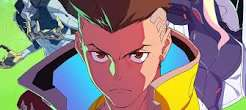

CD Projekt Red e estúdio de animação confirmam nova série no universo de Night City

A expansão transmídia de Cyberpunk continua a todo vapor. Durante um evento digital voltado para acionistas, foi confirmado que uma história inédita de animação ambientada no violento ecossistema futurista de Night City já começou a ser desenhada nos bastidores mundiais.
Diferente do arco visto na produção anterior, a nova narrativa explorará as gangues ocultas que controlam os distritos subterrâneos e a periferia tecnológica da metrópole. O estúdio selecionado para assumir a estética visual prometeu misturar cenários tridimensionais hiperdetalhados com animação tradicional acelerada em 2D.
Roteiristas seniores do game original estão supervisionando os diálogos diretamente para garantir o tom distópico e corporativo da franquia. O projeto tem previsão para receber um trailer completo de gameplay visual e conceitos de personagens na próxima grande convenção de cultura pop internacional.